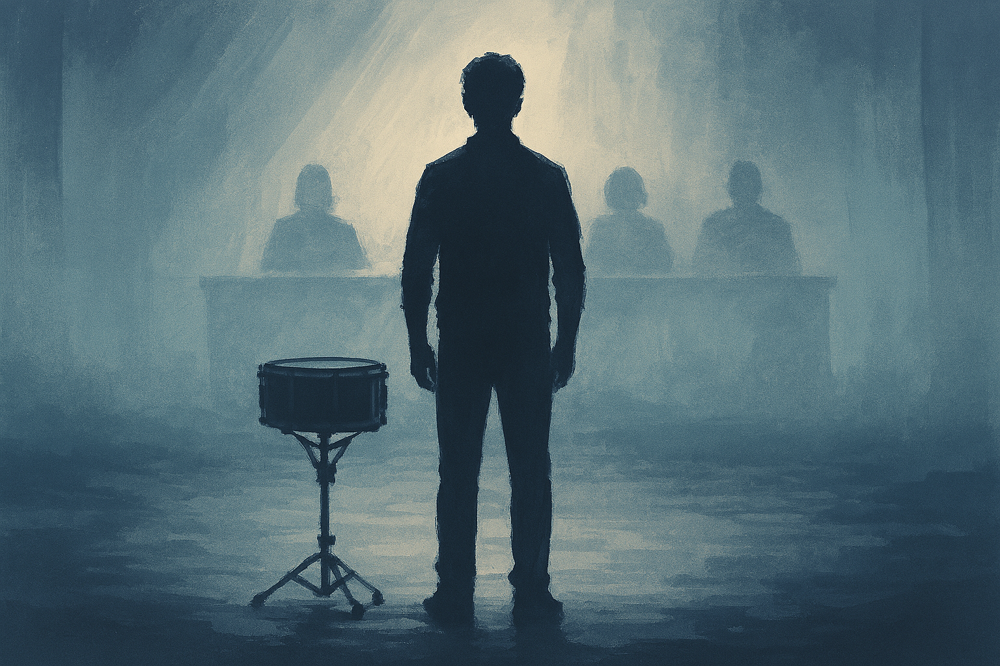
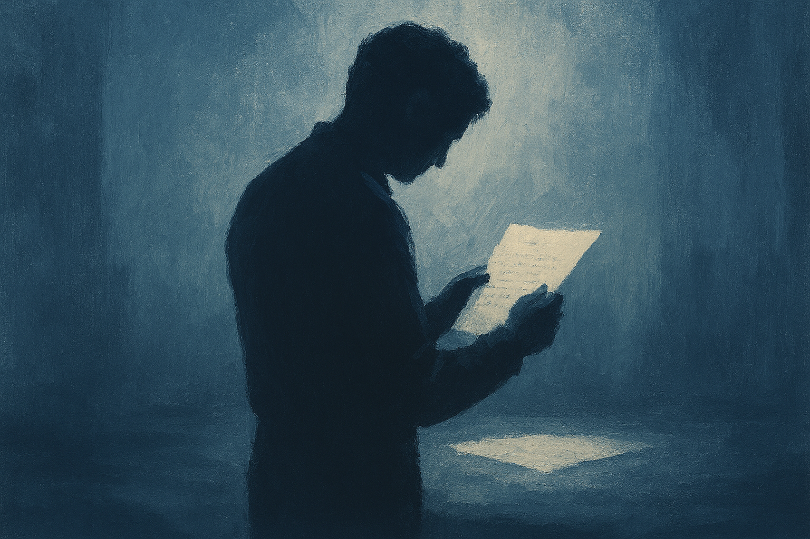
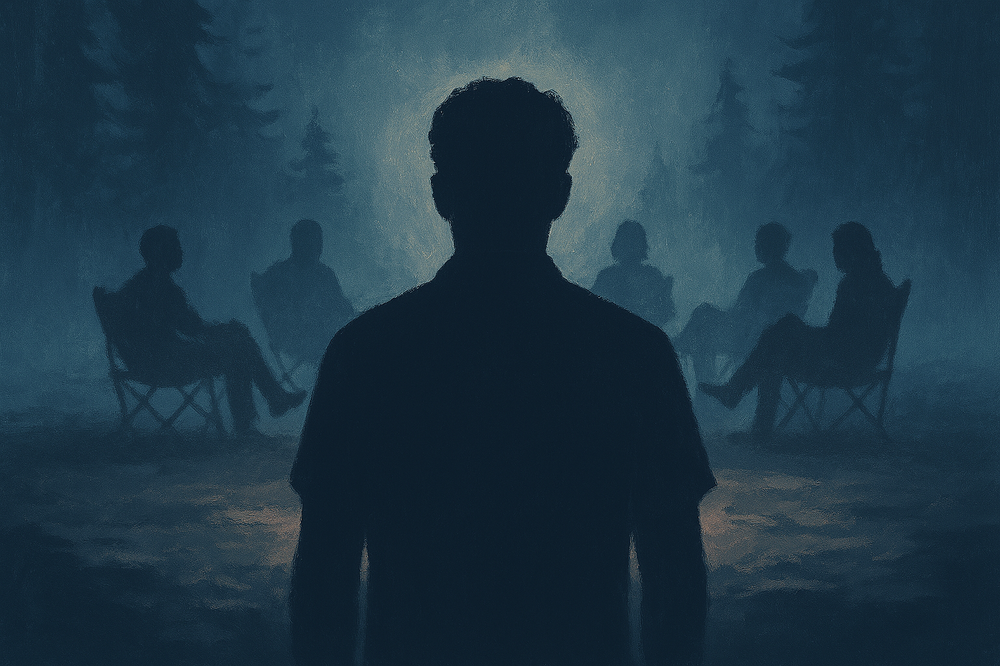
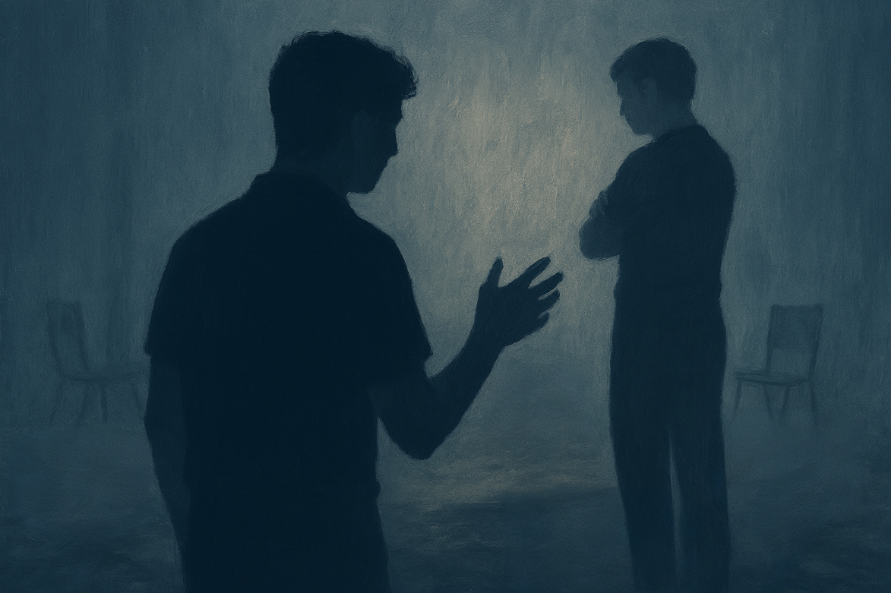
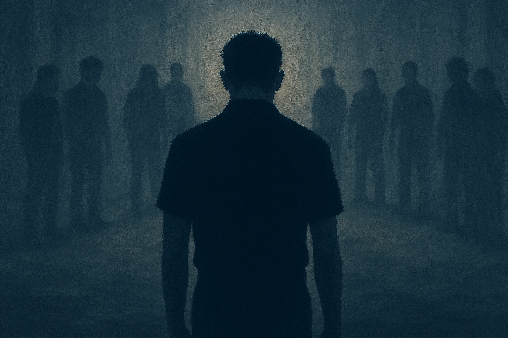
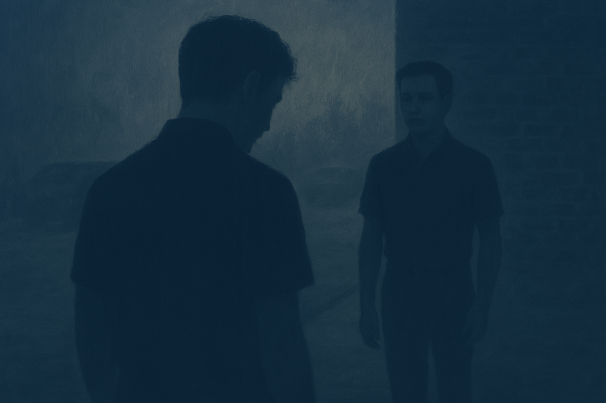
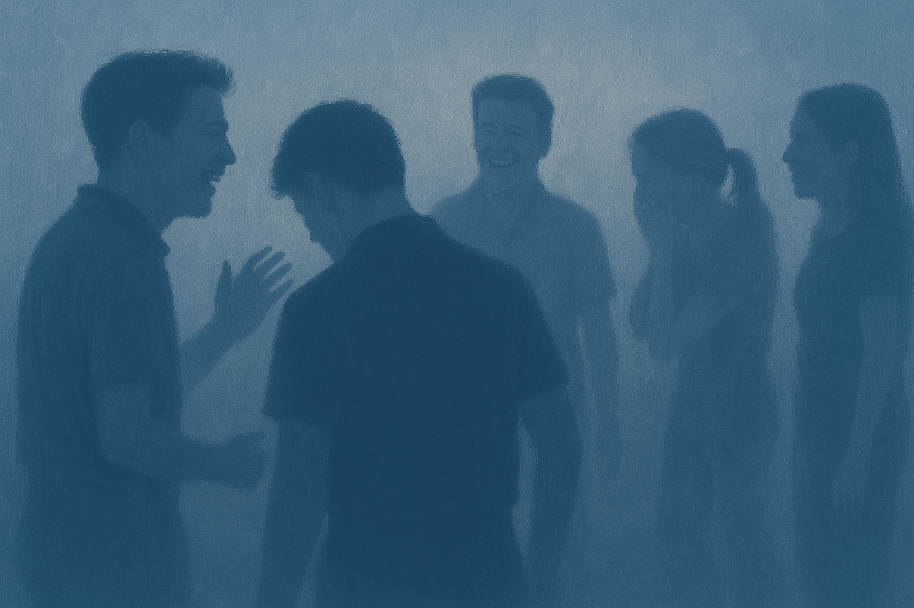
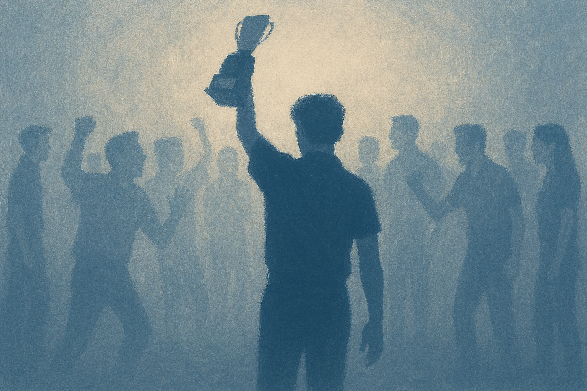

In life, we are always told to achieve more so we may rise to the top.
But what happens when you finally reach it? My senior year on the drumline
began with auditions, and to outsiders, they determined whether you made
the drumline at all. To us drummers, auditions decided our position—our
skill level. For years, I had been stuck in third place, and I had one
simple goal: to finally become second.

Click image to see citation
I practiced for hours, pushing myself harder than ever, believing this
would finally be my year. When the results came out, nothing had changed.
I was still third, and what made it worse was that second place went to a
new guy who had just moved here. All the work I had put in felt invisible.

Click image to see citation
Camping Trip & Rumors
Later that day, we left for a preplanned drumline camping trip. Everyone
tried to comfort me, telling me I deserved the spot and reminding me that
third was still close to the center snare. While the words were kind, they
were not the truth I needed.
The next day, while volunteering for our center snare’s Eagle Scout project,
the conversation shifted from my placement to rumors surrounding the new guy.
He had rumors that made some female drummers uncomfortable. Someone suggested
speaking to the directors about switching positions so he wouldn’t stand next
to her. I agreed—partly because it was the right thing to do, but also because
it meant I might finally move up, even if not through skill, but circumstance.

Click image to see citation
Humiliation at Rehearsal
At our first rehearsal, the plan began to unfold. The female snare was moved,
but instead of switching with the new guy, I was switched with her. I was given
no explanation, and it felt as if my drum tech was avoiding me entirely.

Click image to see citation
When I finally asked why, his answer felt like nonsense. I could see through
his gentle words to what he truly meant: they saw potential in him, not in me.
For the first time in my life, I felt completely humiliated.

Click image to see citation
Learning to Let Go
After rehearsal, I left without speaking. As I packed up, others watched me
with quiet sympathy. As I ran off, our center snare followed me and stopped me.
He said something simple but powerful: “You love this drumline. Don’t let this
ruin your last season.” I didn’t realize it then, but those words stayed with me.

Click image to see citation
As the season went on, the pain of being the lowest-ranked snare slowly faded.
I loved drumming and being around this group too much to stay angry. Over time,
I realized what our drum tech did—what once felt like nonsense—was actually a
logical masterpiece that helped the entire line succeed.

Click image to see citation
Valleyfest
Our year moved quickly, and not only was our sound clean, but we placed near
the top at every competition. Still, I wasn’t satisfied. For years, I had one
goal: to earn Best Percussion at Valleyfest, Iowa’s biggest competition—a title
always won by Roosevelt.
Leading up to Valleyfest, I made it my mission to inspire the drumline. I may
not have been the best player, but I could get the best out of others. On the
day of the competition, our performance was perfect. When the award was
announced—“Outstanding Percussion goes to Waukee Warrior Regiment”—we screamed.
For us, this wasn’t just an award. It was the top we had worked years to reach.

Click image to see citation
Reflection at the Top
That night, we won three awards and made history at Waukee High School. Our
performance was the cleanest drumline show Valleyfest had seen in years, and
judges even reached out to congratulate our drum tech.
I learned something important that night. I wanted the first win badly, but I
enjoyed the process more than the award itself. Standing at the top, I didn’t
worry about being beaten—I reflected on how far we had come. I was proud that
we made it.
This story is based on a personal experience. The video below shows our drumline’s
winning performance at Valleyfest, along with a photograph of the drumline,
capturing the moment that represented years of effort and growth.